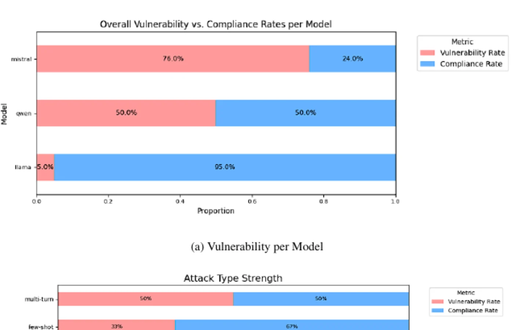
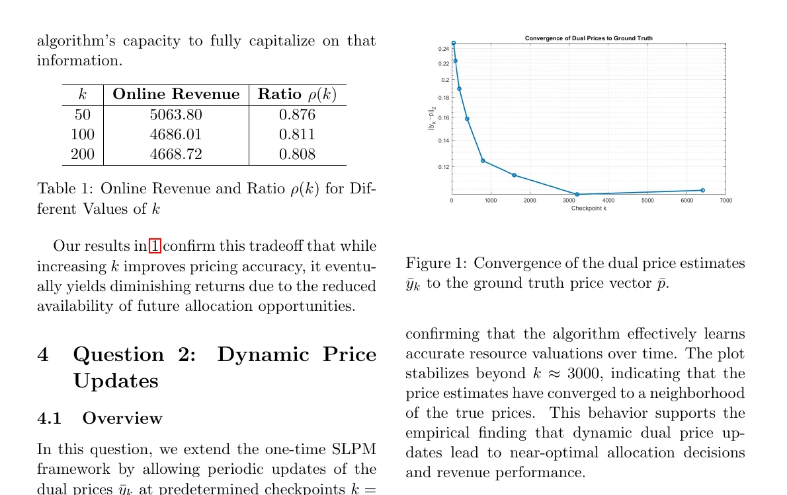
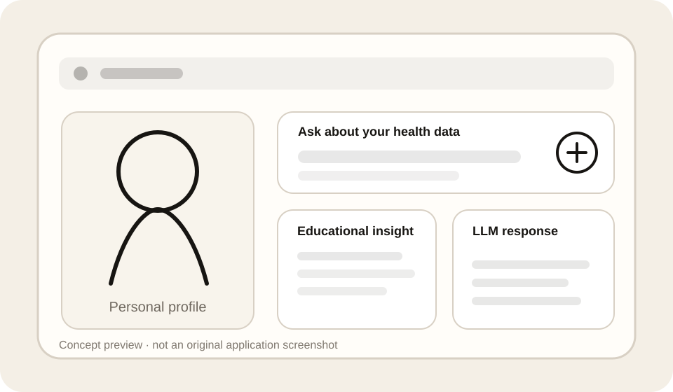
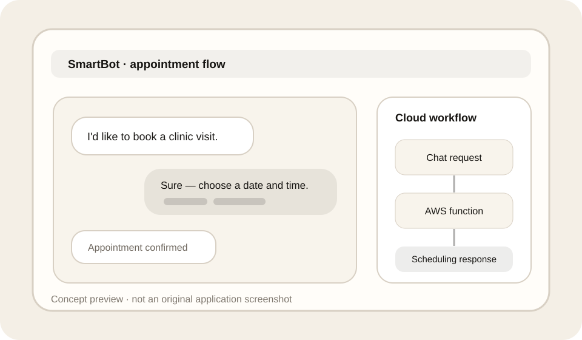

Intelligent Transportation
Early-stage PhD work at HKUST (Guangzhou), focused on how data and machine learning can support transportation decisions.
I’m pursuing a PhD in Intelligent Transportation at HKUST (Guangzhou), advised by Prof. Benedict Jun MA. My doctoral work builds on earlier experience in language and multimodal AI, alongside applied machine-learning and optimization projects.
Early-stage PhD work at HKUST (Guangzhou), focused on how data and machine learning can support transportation decisions.
Research experience in offensive-speech detection and vision-language models before beginning the PhD.
Coursework and project experience across online optimization, stochastic simulation, deep learning, and retrieval systems.
My doctoral work focuses on how data analysis and machine learning can help reveal mobility patterns and support transportation decisions.
A simple overview of the type of transportation research questions I want to pursue during my PhD.
Travel demand, movement patterns, and transportation-system observations.
Use statistics, optimization, and machine learning to model how transportation systems behave.
Translate analysis into insights that can support planning, operations, or policy decisions.
These are broad research directions, not fixed dissertation claims. They frame the intersection of transportation, data, and machine learning that I am currently investigating.
How can data-driven models help us understand patterns and behavior in transportation systems?
How can machine learning support transportation decisions while remaining interpretable and reliable?
Which ideas from data science and modern AI transfer meaningfully to real transportation problems?
From September to November 2025, I worked with Prof. Benyou Wang’s research group on offensive-speech detection, reviewing transformer-based hate-speech research and collecting existing datasets for supervised classification.
During my summer internship at the VLAA Lab, UC Santa Cruz, I studied vision-language models and multimodal architectures such as LLaVA and LLaVA-CoT under the supervision of Hardy Chen and Prof. Cihang Xie.
The first four projects below use visuals and previewable PDFs from Frederick’s actual project reports. Group-project credits are preserved in the case studies and reports.
A four-person Deep Learning project comparing an unconditional DDPM with DiNO-conditioned latent diffusion for chest X-ray synthesis.

A two-person CSC4100 project evaluating LLaMA, Qwen, and Mistral across 100 jailbreak prompts spanning six attack categories.

A two-person DDA4300 optimization final project comparing online allocation algorithms against an offline LP benchmark across 10,000 simulated bidders.

A CUHK(SZ) capstone project building a multilingual, source-grounded RAG chatbot over internal Notion PDF documentation.

Smaller course projects that show implementation breadth beyond the report-backed research above.
I built KnowYourBody as an AI practicum project, using LLM APIs to create a web app for educational and personalized health analytics.

For a Cloud Computing project, I built SmartBot, a clinic appointment chatbot using AWS Cloud Functions.

Papers will appear here with an abstract preview, venue, status, DOI/arXiv, code, BibTeX, and a copyable citation.
Email is the best place to send a longer note or share context about a possible project.